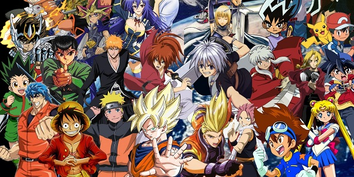

Anime: do Japão para o Mundo
Que a cultura japonesa está em quase, se não em todos os lugares do mundo, não se tem dúvida. Que comidas, roupas, acessórios e principalmente tecnologias oriundas do Japão estão incorporadas na cultura mundial, devido à globalização, não há o que questionar. Mas ainda há uma produção japonesa que, recentemente, tem chegado ao Brasil: O ANIME.
Desde o fim da Segunda Guerra Mundial, os japoneses entraram em contato frequente com a cultura ocidental, principalmente com os Estados Unidos. A passagem da produção dos quadrinhos para os desenhos animados nos EUA chamou a atenção dos japoneses e, em 1967, foram produzidos os primeiros desenhos animados criado por japoneses. O primeiro anime de sucesso foi “Hakujaden” (“A Lenda da Serpente Branca”).
O anime é tradicionalmente desenhado a mão. Porém, com o desenvolvimento dos recursos tecnológicos de animação, principalmente a partir da década de 1990, muitos animes passaram a ser produzidos em computadores e a cada dia ganham mais fãs. Eles possuem características marcantes, como os olhos dos personagens, que são muito grandes e muito definidos, além dos enquadramentos diferentes dos desenhos animados ocidentais e também o uso de cores fortes. Outra característica marcante é a presença de personagens andrógenos e homossexuais. As temáticas são variadas, podem ser abordados desde romance, passando por drama e ficção cientifica, e chegando em terror. Além de todas as características já citadas, tem também a expressão marcante de sentimentos, como uma gota de água que aparece do lado do rosto do personagem, representando o seu constrangimento; dentes e chifres aparecendo repentinamente nos personagens, representando raiva ou maldade; a diminuição súbita do personagem, representando a vergonha; nervos estilizados na testa de um personagem, também representando raiva. Outro elemento que é notório é a voz do personagem. Elas são selecionadas de acordo com a personalidade dos personagens, tendo vozes muito poderosas, infantis, estridentes, harmoniosas ou cavernosas.
No Brasil, os animes são exibidos há mais de 40 anos, e séries como “Don Drácula”, “Piratas do Espaço”, “Menino Biônico” e “Sawamu” colecionam fãs. Mas o maior fenômeno foi “Cavaleiros do Zodíaco”, que, sozinho, gerou em 1994 o “boom” dos desenhos japoneses que ecoa até os dias atuais. A série virou referência, foi reprisada muitas vezes e rendeu muito merchandising.
Além do grande crescimento dos animes nos últimos anos no Brasil, outra atividade que tem ganhado mais adeptos todos os dias é o cosplay. Trata-se do ato de vestir-se igual a um personagem e realizar encenações de seus atos e falas característicos. A ideia surgiu nos Estados Unidos, no final dos anos 70. O Brasil se destaca em competições de cosplay, como a World Cosplay Summit.
Renata Faria adentrou no mundo dos animes há 15 anos. Conheceu os desenhos na infância por assistir canais como Cartoon Network, que transmitiam animes. Ao gostar dos desenhos, começou a alugá-los em fita VHS nas locadoras e também receber de presentes dos amigos e da família, por saberem do seu gosto por fantasia animada. Aprendeu a ler muito cedo e, em decorrência disso, criou encanto pelo gênero fantástico e pelo mundo dos animes. Segundo Renata, “ele possui grande variedade de histórias com personagens cativantes e enredos bem escritos, fugindo da fórmula pré-pronta que se encontra nas produções dos filmes e livros atuais”. Seu gosto pelos animes acontece pela diversidade das histórias em todos os sentidos, tanto nas narrativas como nas animações. De acordo com a fã dos animes, “quanto mais a história fugir do clichê, mais ela a mantém presa e esperando pelo próximo episódio”.
Fonte: Google